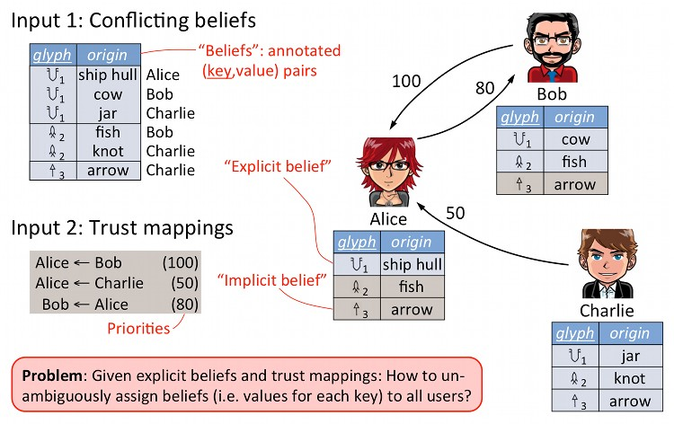
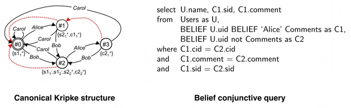

BeliefDB
Adding belief annotations to databases
Default Trust (Sigmod 2010)
In massively collaborative projects such as scientific or community databases, users often need to agree or disagree on the content of individual data items. On the other hand, trust relationships often exist between users, allowing them to accept or reject other users' beliefs by default. As those trust relationships become complex, however, it becomes difficult to define and compute a consistent snapshot of the conflicting information. Previous solutions to a related problem, the update reconciliation problem, are dependent on the order in which the updates are processed and, therefore, do not guarantee a globally consistent snapshot.
This paper proposes the first principled solution to the automatic conflict resolution problem in a community database. Our semantics is based on the certain tuples of all stable models of a logic program. While evaluating stable models in general is well known to be hard, even for very simple logic programs, we show that the conflict resolution problem admits a PTIME solution. To the best of our knowledge, ours is the first PTIME algorithm that allows conflict resolution in a principled way. We further discuss extensions to negative beliefs and prove that some of these extensions are hard.

Belief annotations (VLDB 2009)
In many scientific disciplines today, a community of users is working together to assemble, revise, and curate a shared data repository. As the community accumulates knowledge and the database (DB) content evolves over time, it may contain conflicting information and members can disagree on the information it should store. Relational database management systems (RDBMS) today can help these communities manage their shared data, but provide limited support for managing conflicting facts and conflicting opinions about the correctness of the stored data.
In our discussions with scientists from various disciplines, we have found a clear need for an annotation semantics that helps collaborating database users engage in a structured discussion on both content and each other's annotations. This creates several challenges for a DB that supports such annotations: (1) it needs to allow for conflicting beliefs: users should be able to use annotations to indicate conflicts between what they believe and what others believe. The DB should allow and expose those conflicts; (2) it must also support higher-order annotations: users should be able to not only annotate content but also other users' annotations; and (3) the annotation logics must be supported on top of a standard DBMS: it should allow both an efficient implementation in the relational model and a simple extension of SQL.
To address these challenges, we propose the concept of a Belief Database. A Belief Database consists of base tuples annotated with belief statements. Its semantics is based on multi-agent epistemic logic. This semantics can be represented by an appropriate canonical Kripke structure which, in turn, can be represented in the standard relational model. As interface to a belief database serve belief conjunctive queries, a simple yet versatile query language consisting of conjunctive queries with belief assertions. We have implemented a prototype belief database system BeliefDB and are currently working on: (1) compact representations and alternative semantics of Belief Databases; (2) improved algorithms for updating and querying Belief Databases.

Publications
-
Default-all is dangerous!
Wolfgang Gatterbauer, Alexandra Meliou, Dan Suciu
TaPP 2011. (Also available as arXiv:1105.4395 [cs.DB])
[ Paper],
[
Paper],
[ Illustration Slides],
[ Illustration Slides]
Illustration Slides],
[ Illustration Slides]
-
Managing Structured Collections of Community Data
Wolfgang Gatterbauer, Dan Suciu
CIDR 2011, pp. 207-210. (Outrageous Ideas and Vision Track)
[ Vision Paper],
[ Presentation],
[ Presentation],
[ bib]
bib]
-
Data Conflict Resolution Using Trust Mappings
Wolfgang Gatterbauer, Dan Suciu
SIGMOD 2010, pp. 219-230. (acceptance rate: 21%)
[ Paper],
[ Presentation],
[ Presentation],
[ Poster],
[ bib]
Poster],
[ bib]
Full 20 page version with all proofs (arXiv:1012.3320 [cs.DB], extended UW CSE TR 09-11-01):
[ Full version],
[ bib]
(Version Dec 2010)
-
Believe it or not: Adding Belief Annotations to Databases
Wolfgang Gatterbauer, Magda Balazinska, Nodira Khoussainova, and Dan Suciu
PVLDB 2(1): 1-12 (2009). (acceptance rate: 17%)
[ Paper],
[ Presentation],
[ Presentation],
[ bib]
Full 17 page version with all proofs (arXiv:0912.5241 [cs.DB], updated UW CSE TR 08-12-01):
[ Full version],
[ bib] (Version Sept 2009)
People
| Faculty (PI) | |
| Faculty (Co-PI) | |
| PostDoc (Co-PI) | |
| Graduate student |
Funding
This project is supported in part by NSF grant IIS-0915054. Any opinions, findings, and conclusions or recommendations expressed in this project are those of the author(s) and do not necessarily reflect the views of the National Science Foundation. NSF grant IIS-0915054 has also partially funded the following related projects:
|
http://db.cs.washington.edu/propagation/ |
|
http://db.cs.washington.edu/causality/ |
|
http://queryviz.com |
|
http://uniquerecall.com |